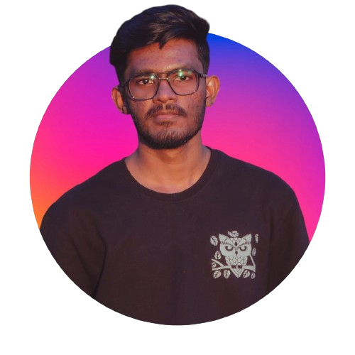

I’m an Associate Developer at EY, building enterprise applications with .NET Core, Angular and SQL. I enjoy turning messy requirements into clean, dependable software.
Outside work I build apps and tools that solve real problems, the kind of things I wish existed. I also contribute to open source and mentor other developers, including through GirlScript Summer of Code 2024. I completed my BCA (2021–2024) and MCA (2024–2026), and joined EY in January 2026.
Promoted to Associate, building applications with .NET Core, Angular and SQL.
Joined EY as an intern and worked on real projects alongside the team.
Went deeper into software engineering, databases and application development.
Contributed to open source projects and guided newcomers through their first contributions.
Learned the fundamentals of programming, databases and web development.
I believe in learning in public. From 2024 to 2025, as a GSSoC’24 contributor and mentor, I helped others make their first pull requests and ship real features.
GSSoC’24ContributorMentor2024–2025Have an idea, want to collaborate, or just want to say hello? Reach out on any of these.